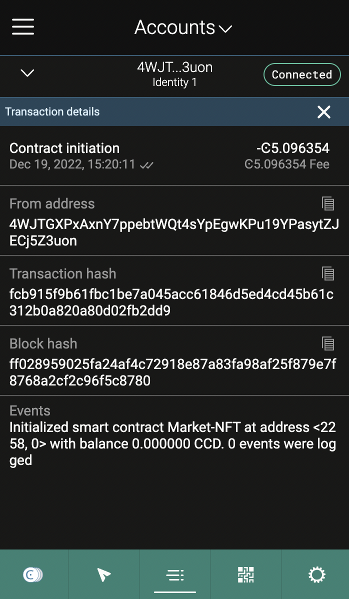
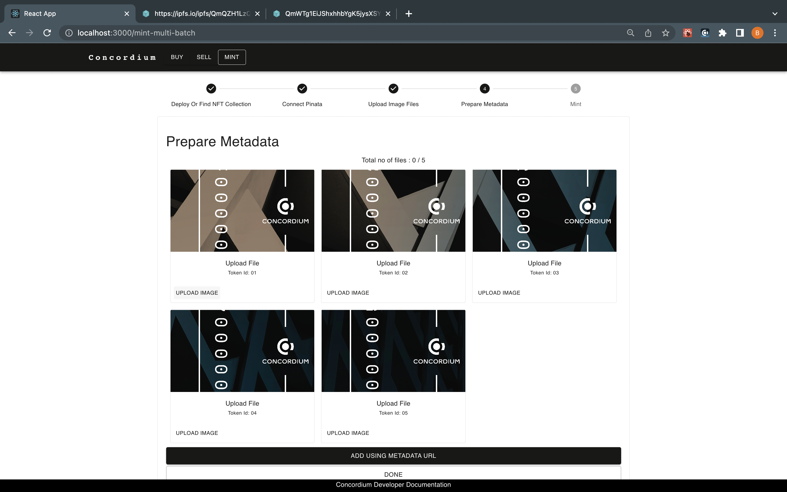
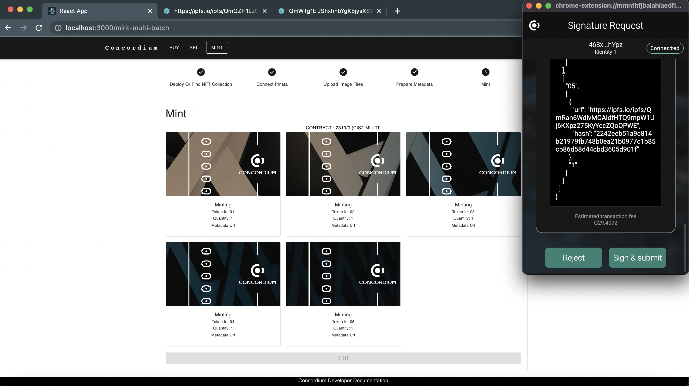
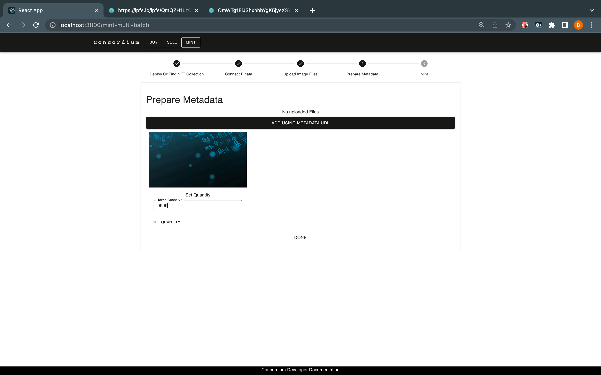

Low code NFT marketplace#
To make it quicker and easier to develop and run an NFT marketplace, the Low-Code NFT Minting tool and marketplace have been created. It includes built-in smart contracts, a template user interface, and various functionalities, including the following:
Connect with Concordium Wallet for Web
Buy/Sell NFTs with a fixed price
Mint NFTs with providing metadata
Mint NFTs without metadata / with Pinata API key + IPFS Integration
Mint NFT collections with/without metadata (Pinata API key)
Mint Semi-Fungible tokens by specifying the token amount from a basic user interface
Set royalties of NFTs
Set a commission (for the marketplace owner)
Create a marketplace
Before starting, make sure that you have the following installed:
Concordium Wallet for Web - setup instructions
node.js verion 14.17.0 or above. If you already have node.js run
node -vto check the version. You can use nvm to manage multiple Node versions installed on a single machine.Yarn - a package manager for JavaScript; replaces the
npmclient.A code editor of your choice, such as Visual Studio Code.
Once you have the above installed, do the following:
Clone the repository with the following command:
git clone https://github.com/Concordium/concordium-dapp-examples/tree/main/low-code-nft-marketplaceInstall the repositorys dependencies with the following command:
cd Low-Code-NFT-Framework/market-ui && yarn installRun the application with the following command. It starts the marketplace example dApp automatically in
localhost:3000starting with the example page.yarn start
Initialize the marketplace
In this step, you will create an instance of the deployed marketplace with the connected wallet address. You can specify the commission and run your own marketplace.
Note
You can also build and deploy a new marketplace contract by following these steps.
Connect to the application with your Concordium Wallet for Web.
Click Create My Marketplace.
A form appears that allows you to create a marketplace instance with two options. First, you can either create a marketplace instance from the one which is already deployed by you. Second, you can create your marketplace contract instance from the smart contract deployed by Concordium. Specify the commission and click Deploy New. This calls the initialize function of the marketplace contract and that instance will be your accounts.
The Concordium Wallet for Web presents a pop up and asks for your approval. To approve the traansaction click Sign & submit.
When the transaction is finalized, you have your own, empty marketplace. You see the contract instance address in the address bar of the browser or you can check it from your Concordium Wallet for Web as described in the following.
To check the contract instance and find the address in the Concordium Wallet for Web:
Click on an account so that you see the account details and transaction log.
As you can see there is a contract initialization transaction in the log, and when you click it, the Events section tells you that you have initialized smart contract Market-NFT at address 2258,0. In your case this number will be different and you will need it in the next section.
Configure the application
The following describes the necessary steps to run your own marketplace that is generated from the deployed marketplace contract.
Now you have to configure your code base accordingly. Go to your projects folder/market-ui and open the Constants.ts file in a code editor. Update the MARKETPLACE_CONTRACT_ADDRESS with your contract instance address value generated in the previous section. In this file in general you will find all constant files, such as address, schema, and module references. You can find more details about these constant variables in this section.

When you specify the contract instance address value, the template will be interacting with your instance, meaning it will have a clean marketplace like below to remove new instance creation from your marketplace and change the CREATE_NEW__MARKETPLACE flag to false.
You now have your own marketplace with the commission rate you specified.
Mint NFT
Within your custom marketplace you can mint your NFTs. After creating your marketplace, you have an empty NFT Marketplace as shown below. In this section you will learn how to create an NFT using your own marketplace.
Click MINT in the top navigation bar. You have two options in this step. First, if you already know an NFT contract instances address and you are the owner, you can specify it in the Find section or click to deploy a new button to create a new instance of an already deployed NFT contract.
This opens the Concordium Wallet for Web where you click Sign & submit to approve the request. After the transaction is finalized you can check your wallet to find out what your token contract instance address is. It is under the Transaction Log section and see the details by clicking it.
In the image above the you can see in the Events section that the CIS2-Multi smart contract instance is initialized at address <2258,0>.
When you have your NFT contract instance, the application redirects you to the storage options. With this template you have two different options while minting an NFT: mint NFTs providing metadata or mint NFTs with Pinata.
You are going to store all digital assets on Interplanetary File System (IPFS) which is the worlds leading decentralized storage solution.
Mint NFTs providing metadata
While you are minting an NFT, in most of the cases you will be storing a URL value that redirects people to a JSON-formatted file. That file should contain a link to the digital asset itself, its name, and description and could potentially include lots of additional attributes to suffice Concordium Interoperability Standard 2(CIS-2). You can host these files and assets anywhere but using a decentralized solution will be our approach.
Note
A CIS-2 token metadata example and details can be found at this link.
To prepare the metadata, you should have a link to your digital asset preferably from IPFS. You can check this tutorial to learn about how you can store data on IPFS with running a node.
When you have an IPFS link to the asset create a JSON file on a text editor, fill it like below and save it.
{ "name": "YOUR NFT NAME", "description": "YOUR NFT DESCRIPTION", "display": { "url": "https://ipfs.io/ipfs....paste your url here" }, "attributes": [ { "name": "some attribute", "type": "string", "value": "999" } { "name": "another attribute", "type": "string", "value": "1" } { "name": "third attribute", "type": "string", "value": "7.2" } ] }Now, you need to store this page on the IPFS as well. It will generate a URL and you are going to store it on-chain.
At the Connect Pinana screen click SKIP. Pinata is described in the next section.
In the Set metadata Url text box, provide the URL that redirects you to the JSON formatted metadata. If you also want to store the hash value of the file check Include Hash? but remember this storing extra data on-chain comes with an extra cost.
Set the tokenID and the token quantity which has to be 1 to create a unique Non-Fungible Token. Click DONE.
You see a final screen to review before minting your token. When you click MINT your Concordium Wallet for Web prompts you for your signature. Click Sign & submit to start the transaction. Once its finalized you will see another pop-up that says All Minted.
Mint NFTs with Pinata
Pinata is a commercial pinning solution that pins your data stored on Interplanetary File System (IPFS). You can find more information about it in this link. Concordium NFT Marketplace Template has built-in integration with Pinata and IPFS that allows artists to mint their collection with a few steps.
When you upload data on IPFS the most important thing that you need to be careful about it is making sure that data is stored/hosted on at least one device and this can be achievable by running a node all the time somewhere. But that may not be an option for everybody who wants to mint NFTs for various reasons like cost, time, and some technical skills. At that moment, Pinata comes in to solve that issue. They run a node on behalf of you and give you an API key. You can access your IPFS node via that API key through their gateway.
Since IPFS and Pinata are widely used in the space, Concordium NFT Marketplace Template has built-in integration with them. To use this functionality create an API key on the platform and copy the JWT (JSON Web Token) to use in the marketplace while minting.
Now paste the API key in the textbox as shown below.

Click CONNECT. When the connection is established, you will be able to upload images either by selecting them from a folder or just dragging and dropping them. You are not limited to uploading 1-2 images, and thanks to the template, the metadata generator is easier than creating one for every item.

Set your token IDs and click Upload for each.
The templates backend will use your API key to upload the data, and retrieves the IPFS link of it and then you will just complete the details about your tokens as described below.

Fill out them and the marketplace will create metadata for you when you click CREATE for each of the tokens. Specify the quantity as 1 and click DONE.
Click MINT. Your Concordium Wallet for Web prompts you to click Sign and Submit to approve the transaction and mint your NFTs.

Mint Semi-fungible tokens
The process to mint semi-fungible tokens is more or less the same as regular minting; you are expected to provide metadata for your token. Follow the exact instructions with minting, such as clicking the MINT button on the top navigation bar.
Note
Remember CIS-2 covers all tokens with one standard.
The app asks you either to create your own NFT contract instance or provide the contract instance address that you own. Specify your contract address, such as 2319,0.
Note
As an example, the metadata providing option is selected. You can mint your tokens with Pinata or any other URL that contains metadata that has CIS-2 standard configuration.
Click Find. When prompted to ontinue with Pinata or metadata option, click SKIP and then click ADD USING METADATA URL. Paste your metadata JSON file URL in the text box and specify a token ID for your token. Specify the QUANTITY of your token which is the amount of this semi-fungible token you will be minting.
Click Metadata URL in the preview tocheck the created metadata. Click DONE.
Click MINT. Your Concordium Wallet for Web prompts you for your signature. Click Sign & submit to start the transaction. You can control the information youve provided until this step such as tokenID, owner account, quantity, and URL before minting them.
When the transaction is finalized a pop-up notifies you that minting is done.
Buy NFT
Navigate to the BUY page and you will see the listed NFTs for sale.
Click the shopping basket on the NFT you wish to buy. If you are the owner of this asset, instead of a basket you will see a checkmark. It will show you how many available amounts are on sale in this marketplace. Since this is a semi-fungible token you can see below that there are 999 available items with a cost of 10000 CCDs. Specify the amount that youd like to buy and click BUY.
In the Concordium Wallet for Web pop-up it shows the amount of CCDs required to pay. Click Sign & submit to approve the transaction.
When the transfer is completed a pop-up appears to inform you that the process is complete.
Sell NFT
With Concordium Low-Code NFT Marketplace you are able to sell your tokens with fixed prices in terms of CCDs! As an owner of a digital asset, you should specify the amount of CCDs that youd like to sell and the buyer will have to pay that amount + fees. If the commission was set as greater than 0 percent by the marketplace owner then the seller also has to pay a commission.
Click SELL on the top navigation bar.
Specify the token contract instance address. The token smart contract will have all the tokens minted with their owners and other relevant data. After you specify the token contract instance address click FIND.
When the Concordium Wallet for Web pop-up prompts you, click Sign & submit. It will check if there is an asset on that particular contract, and then you will give permission to the marketplace contract to act on your behalf when someone wants to buy your asset. The tokens will still be owned by your account.
Enter the token ID to verify that you have some amount of that asset. Click OK.
If you have a balance then the Add Token window appears. In this screen, you can specify the CCD amount, royalty percentage (creator commission from all secondary sales on this marketplace), and how many of your assets will be put on sale. For example, if you have minted 10000 Semi-Fungible tokens with this ID you might only have 999 be available to sell. Click ADD.
In the Concordium Wallet for Web pop-up click Sign & submit to allow the marketplace to sell your assets on your behalf.
Once finalized, if everything is configured correctly, then you see the digital asset listed in the Buy section.
 Copyright 2021 - 2023, Concordium Software ApS
Copyright 2021 - 2023, Concordium Software ApS
{kind=link}
{kind=link}
{kind=link}
{kind=link}
{kind=link}
{kind=link}
{kind=link}
{kind=link}
{kind=link}
{kind=link}
{kind=link}
{kind=link}
{kind=link}
{kind=link}
{kind=link}
{kind=link}
{kind=link}
{kind=link}
{kind=link}
{kind=link}
{kind=link}
{kind=link}
{kind=link}
{kind=link}
{kind=link}
{kind=link}
{kind=link}
{kind=link}
{kind=link}
{kind=link}
{kind=link}